چطور از این راهنما استفاده کنیم؟ هر فصل یک بخش کنسول را توضیح میدهد، با قدمهای شمارهٔدار و عکس. کادر سبز «نکته» و کادر زرد «مهم» است. عکسها از نسخهٔ نمایشی با اطلاعات نمونه گرفته شدهاند.
۱
کنسول مدیریت چیست؟
@@kb@@
کنسول مدیریت جای تنظیم کل سامانه است: کاربران و دسترسیها، هویت شرکت، پیامک، تلفن، پشتیبانگیری و پشتیبانی. فقط مدیران وارد آن میشوند.
ورود به کنسول
در سامانه با حساب مدیر وارد شوید.
روی دکمهٔ تیرهٔ «پنل مدیریت» (بالای صفحه) بزنید.
نام کاربری و رمز مدیر را بنویسید و کد تصویری (کپچا) را وارد کنید؛ اگر خوانا نبود با دکمهٔ چرخشی کد تازه بگیرید.
دکمهٔ «تأیید هویت» را بزنید.
مهم
ورود به کنسول جدا از ورود عادی است و ممکن است بعد از مدتی دوباره رمز بخواهد. رمز مدیر را به کسی ندهید.
زبانههای کنسول
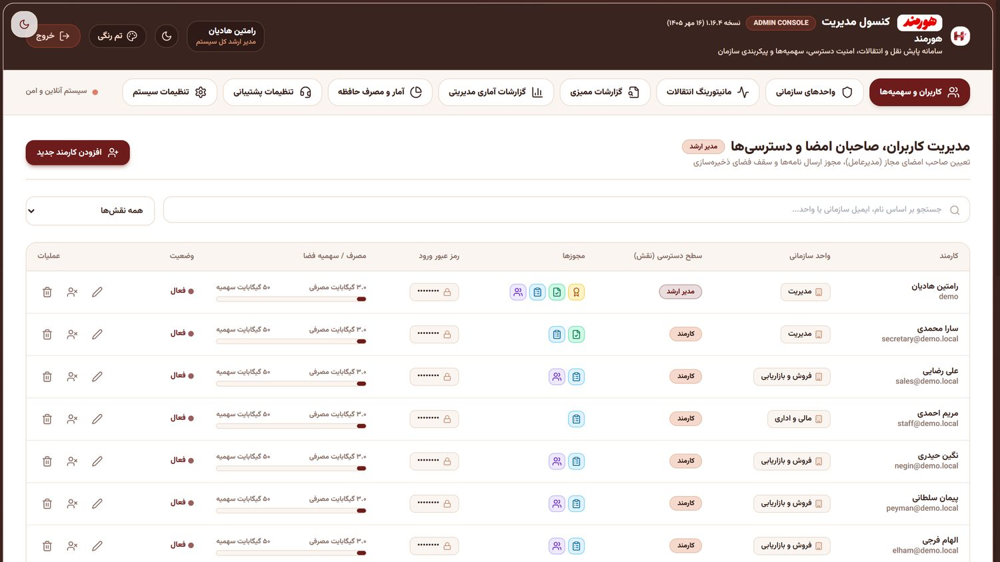
کنسول مدیریت؛ زبانهها بالای صفحهاند.
زبانه
کار آن
فصل
کاربران و سهمیهها
افزودن کارمند، نقش، مجوزها، رمز و سقف فضا
۲
واحدهای سازمانی
تعریف واحدها (مالی، فروش…) و سقف هر واحد
۳
مانیتورینگ انتقالات
دیدن فایلهای ردوبدلشده
۴
گزارشات ممیزی
ثبت رویدادهای مهم برای بررسی
۴
گزارشات آماری مدیریتی
آمار فروش، تماس، وظایف، گارانتی و پشتیبانی
۵
آمار و مصرف حافظه
مصرف فضا و پایش شبکه
۵
تنظیمات پشتیبانی
پلنها، صفحهٔ مشتریان، پاسخ هوشمند
۶
تنظیمات سیستم
هویت، سربرگ، پیامک، تلفن، پشتیبانگیری، مجوز
۷ تا ۹
نکته
تعداد کاربران آنلاین و وضعیت سیستم («سیستم آنلاین و امن») در گوشهٔ چپ نوار زبانهها نمایش داده میشود.
۲
کاربران و سهمیهها
@@kc@@
اینجا هر کارمند را میسازید، مجوزهایش را تعیین میکنید و فضای ذخیرهسازی او را میبینید.
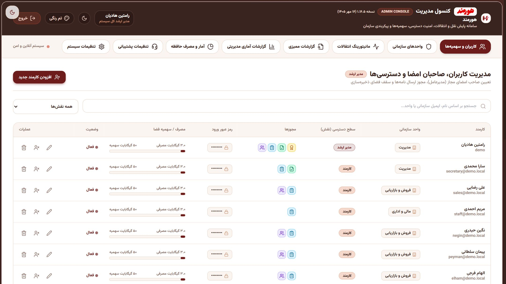
فهرست کاربران با نقش، واحد، مجوزها و مصرف فضا.
افزودن کارمند
روی «افزودن کارمند جدید» بزنید.
نام و نام خانوادگی، ایمیل یا نام کاربری، واحد سازمانی و رمز اولیه را بنویسید.
نقش را انتخاب کنید: «مدیر ارشد»، «مدیر واحد» یا «کارمند».
اگر او مدیرعامل است سوئیچ «مدیرعامل» را بزنید؛ بقیهٔ مجوزها را بعد از ساخت حساب از «جدول مجوزها» (در همین فصل) بدهید.
شمارهٔ موبایل و شمارهٔ داخلی تلفن او را وارد کنید و ذخیره کنید.
جدول مجوزها
بالای صفحهٔ «کاربران و سهمیهها» دو نما هست: «فهرست کاربران» و «جدول مجوزها». در جدول هر کارمند یک ردیف است و هر منو و زیرمنو یک ستون؛ با یک تیک مجوز همان لحظه داده یا گرفته میشود و کارمند با یک اعلان باخبر میشود.
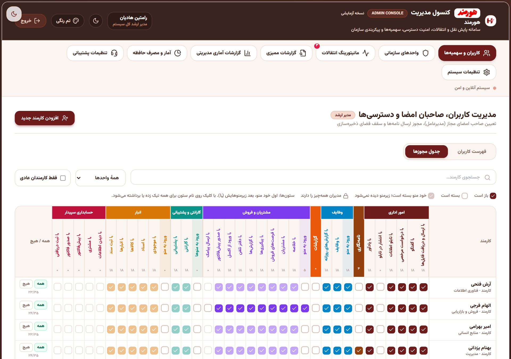
جدول مجوزها: ستونها اول خود منو و بعد زیرمنوهایش.
خود منو: اگر بسته باشد کارمند آن منو را اصلاً نمیبیند؛ ستونهای زیرمنوی آن کمرنگ میشود.
زیرمنو: بهطور پیشفرض باز است و برای هر کارمند میتوانید جدا ببندید؛ زیرمنوی بسته برای او دیده نمیشود.
نام ستون: با کلیک روی نام ستون برای همهٔ کارمندان تیک زده یا برداشته میشود (با تأیید). دکمههای «همه» و «هیچ» هر ردیف برای یک نفر است.
مدیران: مدیر ارشد و مدیر واحد همهٔ مجوزها را دارند و ردیفشان قفل است.
مدیرعامل: فقط یک نفر و از «ویرایش کاربر» تعیین میشود؛ در آن پنجره فقط همین یک سوئیچ مانده است.
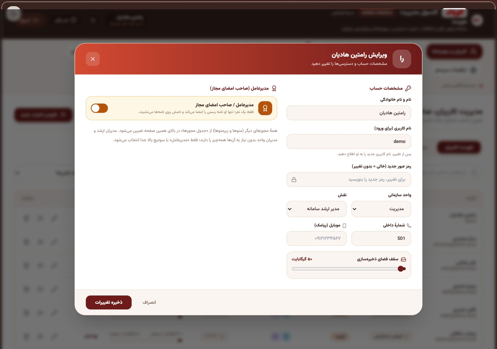
پنجرهٔ ویرایش کارمند: مشخصات حساب و سوئیچ مدیرعامل.
منو
زیرمنوها
امور اداری
ارسال و دریافت فایلها، گفتگو، درخواست مرخصی، تابلو اعلانات، انتشار در تابلو، یادآور
نامهنگاری
ورود و نگارش نامه
وظایف
ورود به منو، وظایف، گزارشهای روزانه
گزارشات
ورود به منو
مشتریان و فروش
ورود به منو، خلاصه، مشتریان، فرصتهای فروش، پیگیریها، گزارشها، دفتر تلفن، ورود از اکسل، صدور پیشفاکتور، پیامک
گارانتی و پشتیبانی
ورود به منوها، گارانتی، پشتیبانی
انبار
ورود به منو، موجودی، اسناد، کالاها، انبارها، ثبت سند
هر منو یا زیرمنوی تازهای که به سامانه اضافه شود، خودکار یک ستون در همین جدول میگیرد.
نکتههای مهم
شمارهٔ داخلی: باید با شمارهٔ داخلی در تلفنخانه یکی باشد تا پاپآپ تماس به این کاربر برسد.
شمارهٔ موبایل: برای پیامک اعلانها لازم است.
رمز: نمایش داده نمیشود؛ فقط میتوانید رمز تازه بگذارید. از کارمند بخواهید خودش آن را عوض کند.
حذف مشتری: فقط مدیر سیستم (مدیر ارشد یا مدیر واحد) میتواند مشتری حذف کند؛ حتی صاحب پروندهٔ مشتری هم نمیتواند.
مهم
حذف یک کاربر یا یک مشتری قابل برگشت نیست. اگر مطمئن نیستید، بهجای حذف، کاربر را غیرفعال کنید.
۳
واحدهای سازمانی
@@kd@@
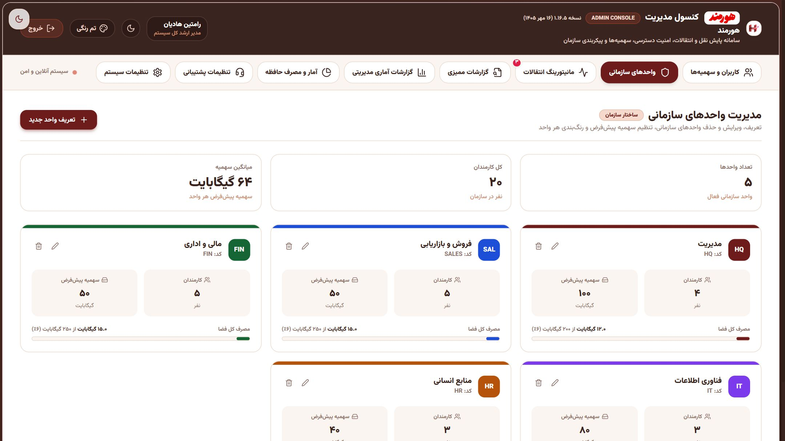
واحدهای سازمانی با سقف فضا و تعداد کارمندان.
هر واحد (مثلاً مدیریت، فروش و بازاریابی، مالی و اداری، فناوری اطلاعات) یک کد، رنگ و سقف فضای پیشفرض دارد. بالای صفحه تعداد واحدها، کل کارمندان و میانگین فضا دیده میشود.
روی «تعریف واحد جدید» بزنید.
نام، کد کوتاه، رنگ و سهمیهٔ پیشفرض فضا را بنویسید.
ذخیره کنید؛ در فرم کاربر میتوانید کارمند را به این واحد بدهید.
نکته
فایل را میشود به «یک واحد» فرستاد؛ پس واحدها را طوری نامگذاری کنید که همه بشناسند.
۴
مانیتورینگ انتقالات و گزارشات ممیزی
@@ke@@
مانیتورینگ انتقالات
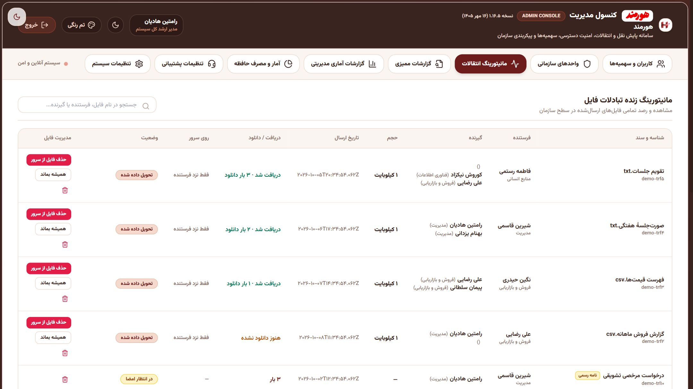
فایلهای فرستادهشده در سامانه.
همهٔ فایلهایی که همکاران برای هم فرستادهاند: فرستنده، گیرنده، زمان و حجم. برای بررسی فضا یا پیگیری یک فایل از اینجا استفاده کنید.
گزارشات ممیزی
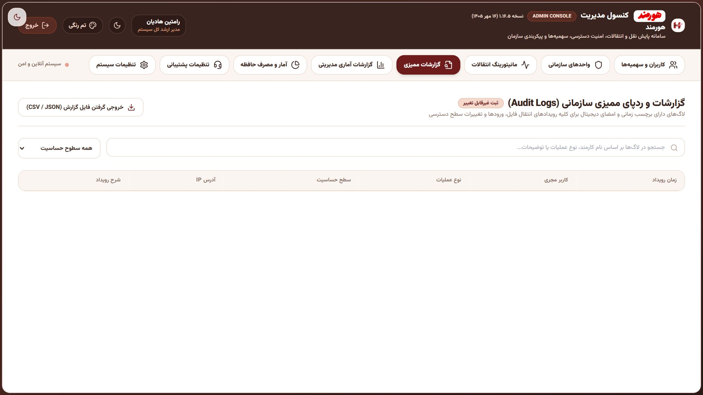
گزارش ممیزی؛ هر رویداد مهم با نام و زمان ثبت میشود.
ثبت میشود چه کسی، چه زمانی، چه کاری کرد (ورود، تغییر، حذف و…). این فهرست برای پیداکردن علت یک اتفاق ارزش دارد.
۵
گزارشات آماری و مصرف حافظه
@@kf@@
گزارشات آماری مدیریتی
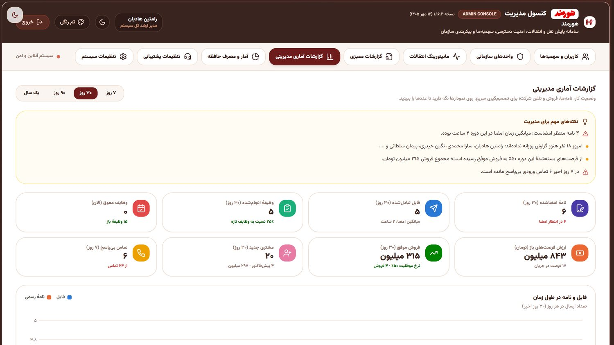
گزارشات آماری با بازهٔ ۷ روز، ۳۰ روز، ۹۰ روز و یک سال.
همان گزارشات منوی «گزارشات» است: نکتههای مهم برای مدیریت، نامهها و فایلها، فروش و فرصتها، تماسهای بیپاسخ، وظایف عقبافتاده، گارانتی، پشتیبانی و کالاهایی که موجود نبودند.
آمار و مصرف حافظه
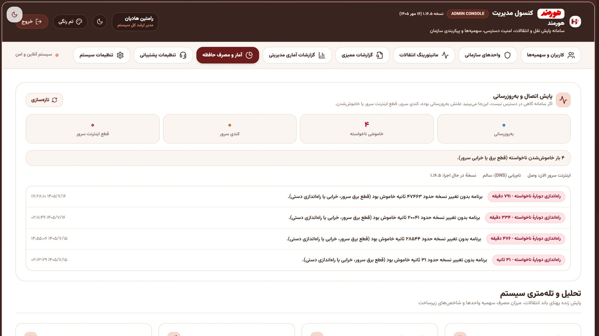
مصرف فضا و پایش شبکه.
مصرف فضا: هر کاربر و هر واحد چقدر فضا استفاده کرده است.
پایش شبکه: قطع و وصل اینترنت سرور و بهروزرسانیهای خودکار را ثبت میکند. اگر سرور مدام کند یا قطع میشود، نشانهاش را اینجا میبینید.
۶
تنظیمات پشتیبانی
@@kg@@
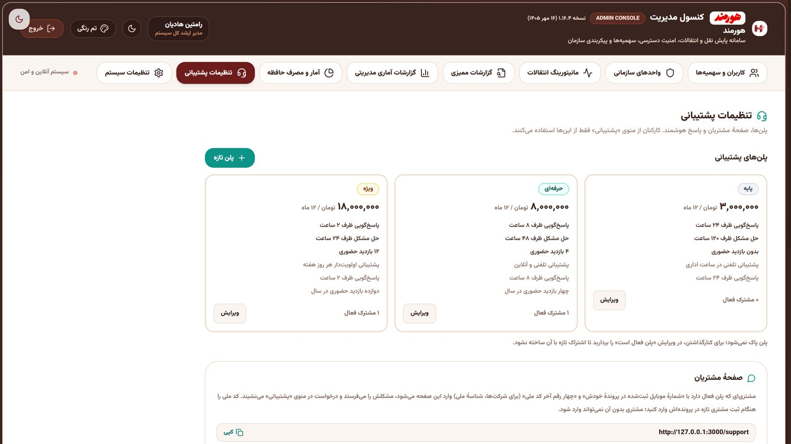
پلنهای پشتیبانی و تنظیمات صفحهٔ مشتریان.
پلنها
روی «پلن تازه» بزنید.
نام، قیمت، مدت (ماه)، زمان پاسخگویی، زمان حل مشکل (به ساعت) و تعداد بازدید حضوری را بنویسید.
ویژگیها (هر خط یک مورد) و یک رنگ را بنویسید و ذخیره کنید.
سه پلن آماده هست: پایه، حرفهای و ویژه. پلن پاک نمیشود؛ برای کنار گذاشتن، «پلن فعال است» را بردارید تا اشتراک تازه با آن ساخته نشود. زیر هر پلن شمار مشترکان فعال آن دیده میشود.
مهم
زمان حل مشکل نباید از زمان پاسخگویی کمتر باشد.
صفحهٔ مشتریان
نشانی صفحه (آدرس سامانه بهاضافهٔ /support) را کپی و به مشتری بدهید. مشتری با موبایل ثبتشده در پروندهٔ خودش و چهار رقم آخر کد ملی وارد میشود. با تیک «ورود مشتریان باز باشد» میتوانید ورود را فوری ببندید.
نکته
اگر مشتری نتواند وارد شود، سه چیز را ببینید: پلن او فعال است؟ موبایلش در پرونده هست؟ کد ملی (یا شناسهٔ ملی شرکت) در پرونده وارد شده؟
پاسخ هوشمند (togpt)
نشانی سرویس ثابت است (https://togpt.ir/api/v۱) و تغییر نمیکند.
کلید API را از حساب togpt خودتان بگیرید و همراه نام مدل وارد کنید. کلید پس از ذخیره دیگر نمایش داده نمیشود.
در کادر «اطلاعات شرکت و محصولات» ساعت کاری، تلفن و پاسخ پرسشهای پرتکرار را بنویسید تا دستیار با آن جواب بدهد.
با «آزمایش اتصال» از درستی کلید و مدل مطمئن شوید و بعد «پاسخ هوشمند روشن باشد» را بزنید.
جواب دستیار با برچسب «پاسخ هوشمند» میآید، وضعیت و مهلت درخواست را عوض نمیکند و همکار شما همچنان آن را میبیند.
مهم
کلید API مثل رمز است؛ آن را برای کسی نفرستید. اگر درز کرد، از حساب togpt عوضش کنید و اینجا «پاککردن کلید» را بزنید.
۷
تنظیمات سیستم (۱): هویت، نامه و فایل
@@kh@@
تنظیمات سیستم چند زبانهٔ کوچک دارد. بالای صفحه دکمهٔ «ذخیرهٔ کلیهٔ تنظیمات» هست؛ بعد از تغییر آن را بزنید.
نام و هویت سازمان
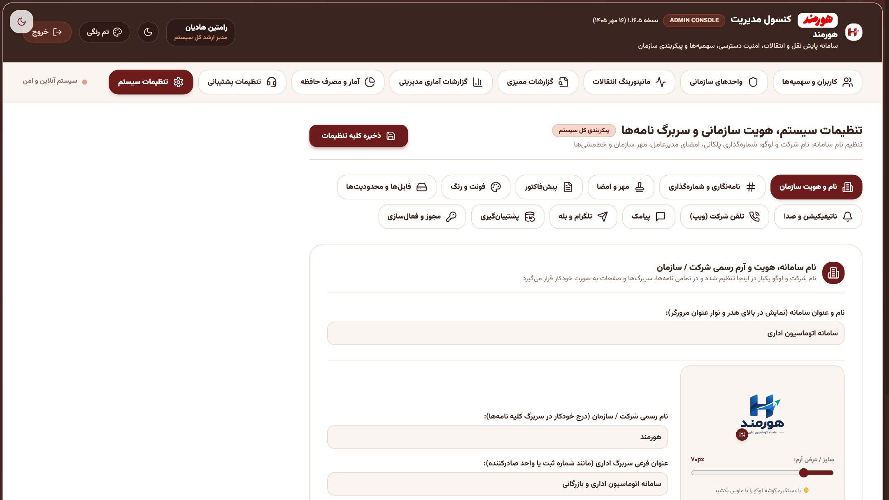
نام و هویت سازمان.
نام رسمی شرکت / سازمان: این نام در صفحهٔ ورود، هدر سامانه و کنسول، و نوار عنوان مرورگر نوشته میشود تا هر کس بداند این سامانه مال کدام شرکت است. اگر «خط پایانی پیامک» را خالی بگذارید، زیر پیامکها هم همین نام میآید.
عنوان سامانه، لوگو، آدرس و تلفن: در سربرگ نامهها و پیشفاکتور استفاده میشود.
نامهنگاری و شمارهگذاری
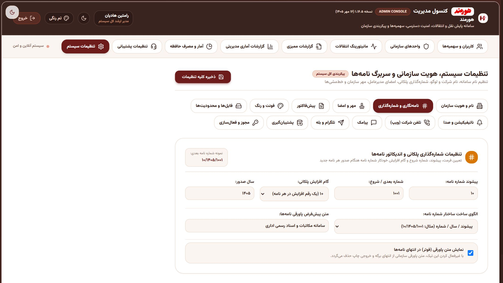
قالب شمارهٔ نامهها.
تعیین میکنید شمارهٔ نامهها با چه قالبی (سال و شمارهٔ پلکانی) داده شود و از چه عددی شروع شود.
مهر و امضا
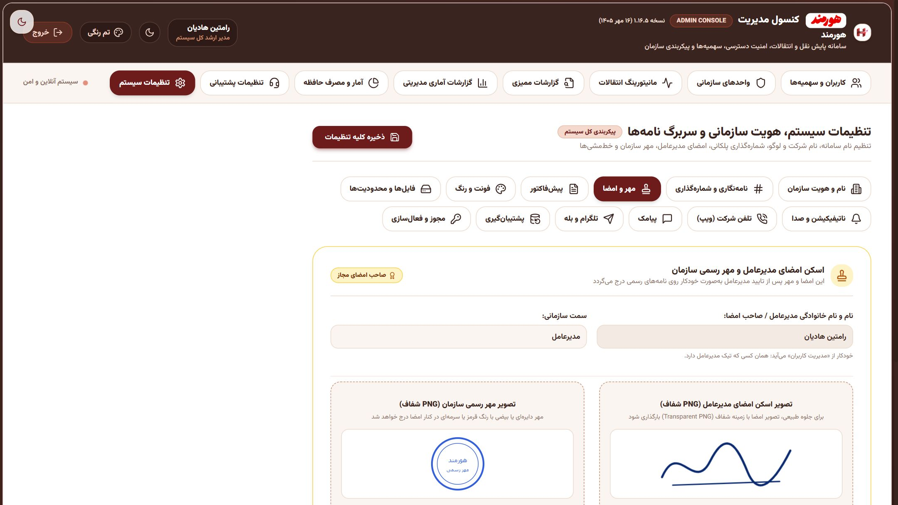
اسکن امضا و مهر رسمی مدیرعامل.
نام صاحب امضا و سمت او را بنویسید.
تصویر امضا و مهر را (PNG شفاف) بارگذاری کنید.
ذخیره کنید؛ از این پس روی نامههای امضاشده و پیشفاکتورهای تأییدشده مینشیند.
پیشفاکتور
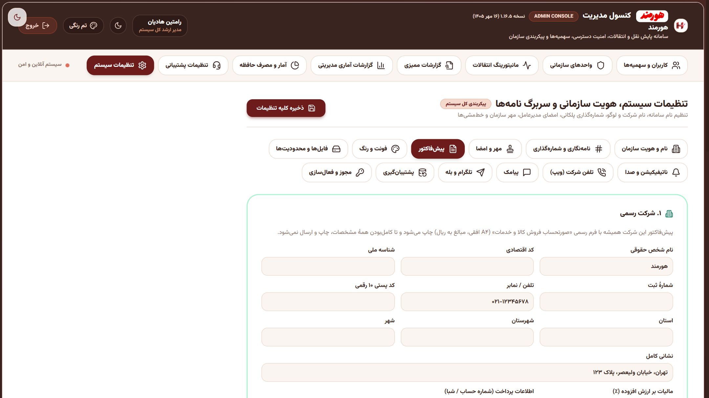
تنظیمات پیشفاکتور.
اطلاعات فروشنده (نام، شناسه، کد اقتصادی، نشانی، حساب بانکی)، شرایط پیشفرض و اینکه تأیید مدیرعامل لازم است یا نه را اینجا مینویسید. میتوانید چند شرکت صادرکننده تعریف کنید و برای هر کدام تأییدکننده جدا بگذارید.
فونت و رنگ و فایلها
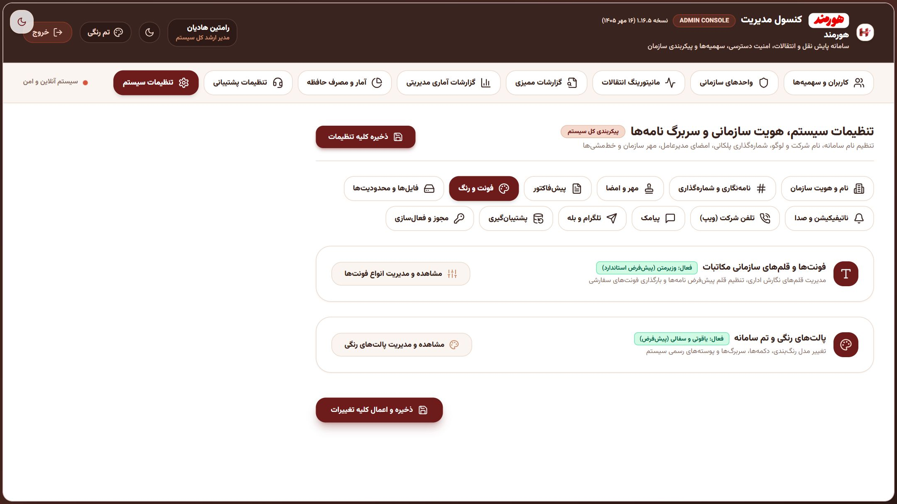
فونت و رنگ.
فونت پیشفرض نامهها را انتخاب میکنید. رنگ ظاهر هر کاربر را خودش با دکمهٔ «رنگبندی» بالای صفحه تعیین میکند. در «فایلها و محدودیتها» سقف حجم هر فایل و سقف فضای پیشفرض کاربران را مینویسید.
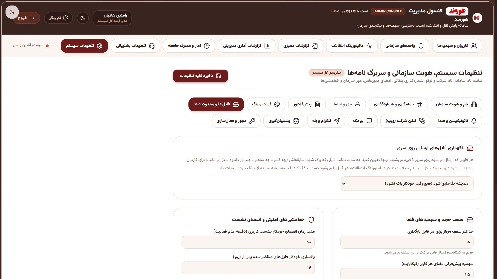
سقف حجم و فضا.
۸
تنظیمات سیستم (۲): اعلان، تلفن و پیامک
@@ki@@
ناتیفیکیشن و صدا
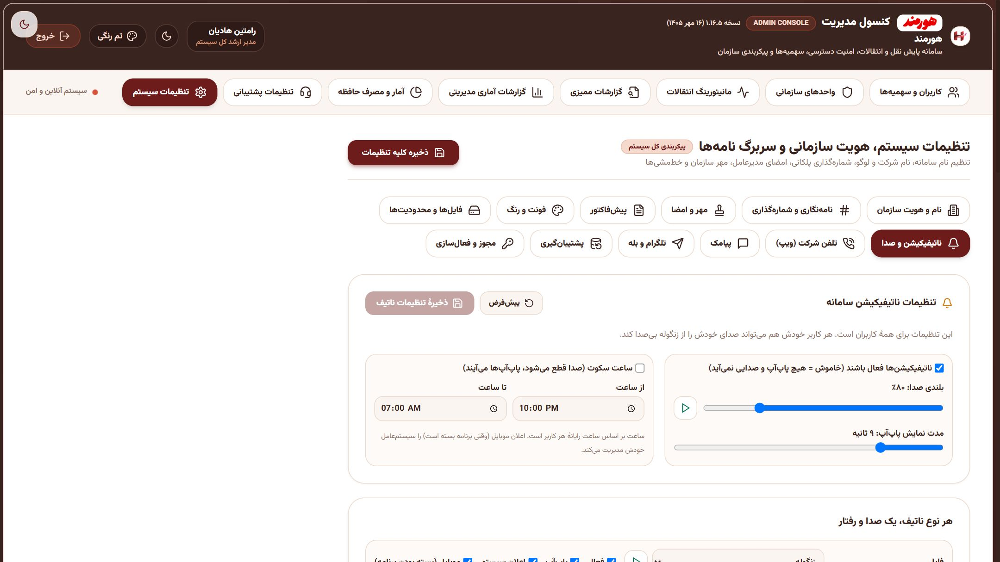
تنظیمات اعلان و صدا.
برای همه: روشنبودن اعلان، بلندی صدا، مدت نمایش پاپآپ و ساعت سکوت (مثلاً شب).
هر نوع اعلان: برای هر رویداد (فایل، نامه، وظیفه، تماس، «تماس بیپاسخ» و…) صدا، پاپآپ، اعلان رایانه و اعلان گوشی را جدا روشن یا خاموش میکنید.
پاپآپ «تماس بیپاسخ» بهطور پیشفرض خاموش است چون پاپآپ زنگخوردن قبلاً آمده؛ اگر میخواهید روشن کنید همینجاست.
تلفن شرکت (ایزابل)
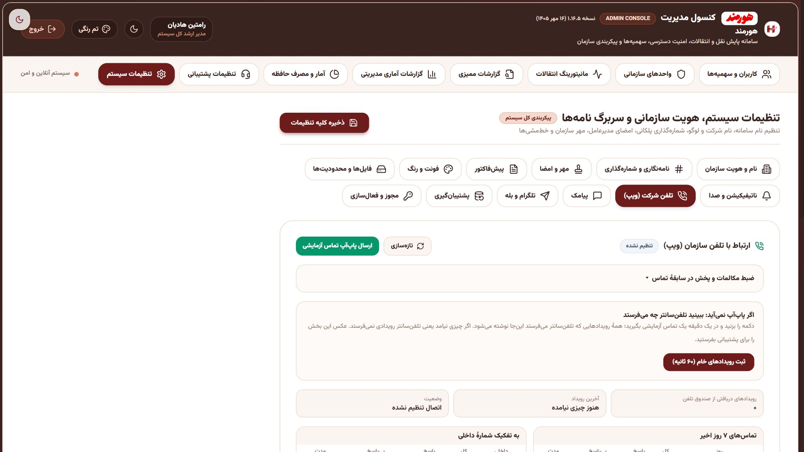
وضعیت اتصال به تلفنخانه و ابزار عیبیابی.
وضعیت: «متصل» یا «تنظیم نشده». اتصال را شرکت پشتیبان با پنل نصب انجام میدهد.
رویدادهای دریافتی: عددی که با هر تماس بالا میرود؛ اگر صفر میماند، ایزابل چیزی نمیفرستد.
ثبت رویدادهای خام (۶۰ ثانیه): دکمه را بزنید، یک تماس آزمایشی بگیرید و خطوط ثبتشده را برای پشتیبان بفرستید؛ علت نیامدن پاپآپ را نشان میدهد.
ارسال پاپآپ تماس آزمایشی: بدون تماس واقعی پاپآپ را امتحان میکند.
مهم
رمز و اطلاعات ورود ایزابل را فقط داخل پنل نصب وارد کنید و برای کسی نفرستید.
پیامک (کاوهنگار)
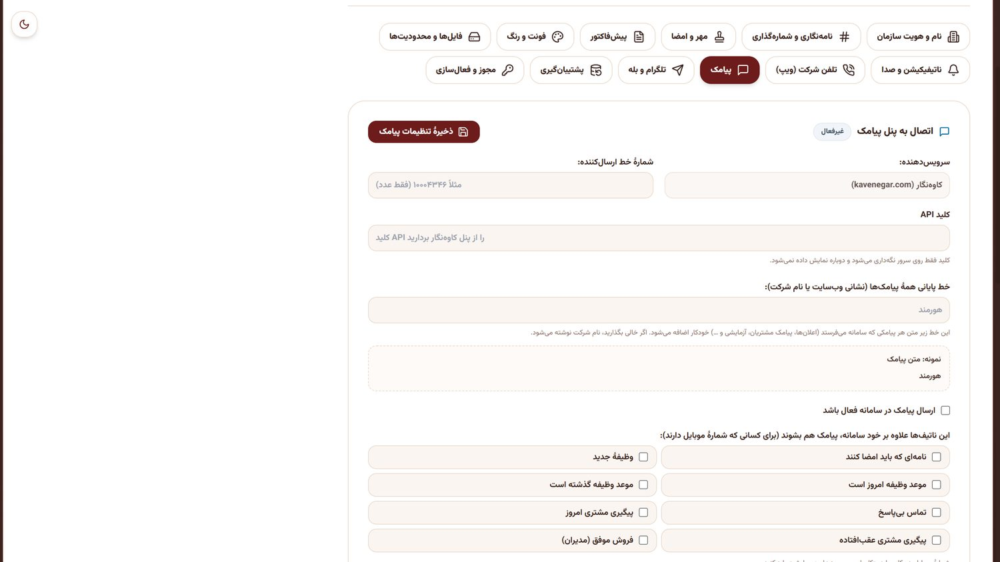
تنظیمات پیامک.
در پنل کاوهنگار: «توسعهدهندگان ← کلید API» را بردارید و شمارهٔ خط خودتان را از «خطوط» ببینید.
کلید و شمارهٔ خط (فقط عدد) را وارد کنید.
در «خط پایانی همهٔ پیامکها» نشانی سایت یا نام شرکت را بنویسید؛ زیر هر پیامک نوشته میشود (اگر خالی بماند، نام رسمی شرکت).
تیک «ارسال پیامک در سامانه فعال باشد» را بزنید.
در «پیامک خودکار به مشتریان» هر پیامی را که میخواهید تیک بزنید (با «مشاهده» متن نمونه را میبینید) و «ذخیرهٔ تنظیمات پیامک» را بزنید.
با «ارسال پیامک آزمایشی» به موبایل خودتان امتحان کنید و «آخرین پیامکهای ارسالی» را ببینید.
پیامک خودکار
چه زمانی
خوشآمدگویی
مشتری تازه با موبایل ثبت شود
ثبت درخواست
فرصت فروش تازه
صدور پیشفاکتور
بعد از تأیید مدیرعامل (اگر لازم باشد)
سپاس از خرید
فروش موفق
ثبت گارانتی
گارانتی تازه
حل درخواست پشتیبانی
درخواست «حل شد»
مهم
همهٔ پیامکهای خودکار در ابتدا خاموشاند. اگر کاوهنگار پیامی را رد کند، دلیلش در «آخرین پیامکهای ارسالی» نوشته میشود.
نکته
هر کاربر برای دریافت پیامک اعلانها باید شمارهٔ موبایل در فرم کاربرش داشته باشد.
تلگرام و بله
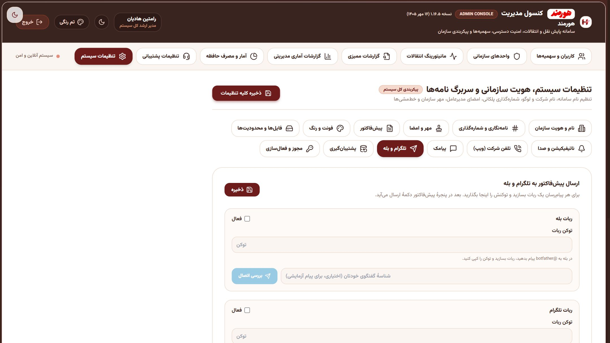
اتصال به رباتها.
اگر ربات تلگرام یا بله دارید، توکن آن را اینجا وارد میکنید تا مشتری یا همکار بتواند با ربات به سامانه وصل شود.
۹
تنظیمات سیستم (۳): پشتیبانگیری و مجوز
@@kj@@
پشتیبانگیری
هر شب سامانه خودکار از کل پایگاه داده یک نسخه میگیرد و روی سرور نگه میدارد.
از زبانهٔ «پشتیبانگیری» میتوانید فهرست نسخهها را ببینید، همین حالا نسخه بگیرید و بازیابی کنید.
میتوانید نسخهها را به Google Drive یا OneDrive هم بفرستید تا اگر سرور خراب شد، نسخه بیرون از آن باشد.
مهم
نسخهٔ پشتیبانی که فقط روی همان سرور باشد بیفایده است؛ حتماً یک نسخه را جای دیگر هم نگه دارید. قبل از هر بازیابی، از وضع فعلی هم نسخه بگیرید.
مجوز و فعالسازی
سامانه برای هر سرور مجوز دارد. اگر مجوز تمام شود یا سرور جابهجا شود، کد فعالسازی را اینجا وارد میکنید. کد را شرکت پشتیبان میدهد.
نسخه و بهروزرسانی
سرور خودکار بهروز میشود. نسخهٔ فعلی کنار لوگو در هدر نوشته شده و بعد از هر بهروزرسانی، یک بار Ctrl+F۵ بزنید تا صفحهٔ قدیمی نماند.
۱۰
اتصال برنامهها (API) و سپیدار
@@kba@@
در «تنظیمات سیستم ← اتصال برنامهها (API)» برای هر برنامهٔ بیرونی یک کلید جدا میسازید و دقیقاً مشخص میکنید چه کارهایی بتواند بکند. هر زمان کلید را حذف کنید، همان لحظه دسترسی برنامه قطع میشود.
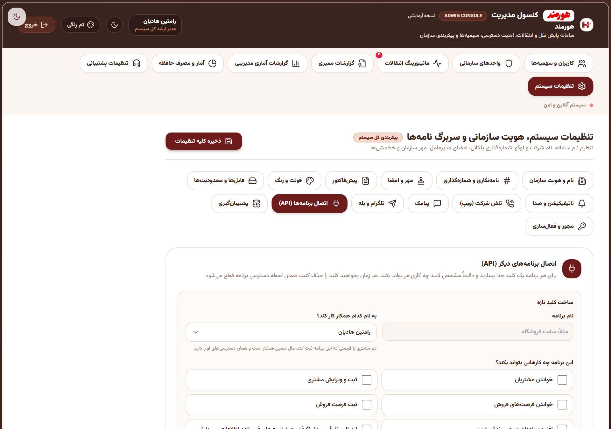
ساخت کلید برای برنامههای دیگر.
نام برنامه و همکار: هر مشتری یا فرصتی که برنامه ثبت کند، مال همان همکار است و همان دسترسیهای او را دارد.
دسترسیها: خواندن یا ثبت مشتری، خواندن یا ثبت فرصت، افزودن یادداشت، همگامسازی انبار و اتصال برنامهٔ سپیدار.
کلید: فقط یکبار نمایش داده میشود؛ همان لحظه کپی کنید. هر کلید در دقیقه حداکثر ۱۲۰ درخواست دارد.
راهاندازی سپیدار
در سپیدار یک «دستگاه جدید» تعریف کنید و کد هشتحرفی «سریال» را بردارید.
در هورمند منوی «سپیدار» ← «ساخت کد اتصال» را بزنید (کد ۱۵ دقیقه و فقط یکبار معتبر است).
روی کامپیوتر سپیدار فایل «۰-راهاندازی-خودکار» را باز کنید و به چند سؤال جواب بدهید؛ کلید، ارز، نوع فروش و اجرای خودکار را برنامه خودش انجام میدهد.
در «جدول مجوزها» به همکاران ستونهای «سپیدار» را بدهید.
نکته
راهنمای تصویری و دقیق راهاندازی در سند «راهنمای تصویری اتصال سپیدار» هست.
حالت انبار: مستقل یا متصل به سپیدار
انبار میتواند موجودی را خودش نگه دارد (مستقل) یا از سپیدار بگیرد. بعد از اولین ارسال موفق از سپیدار، حالت به «متصل به سپیدار» میرود و ثبت دستی سند بسته میشود؛ مدیر هر زمان از بالای صفحهٔ انبار میتواند «برگشت به حالت مستقل» را بزند و موجودی از همان عدد ادامه پیدا میکند.
۱۱
نگهداری، امنیت و عیبیابی
@@kbb@@
کارهای دورهای پیشنهادی
هر چند وقت
چه کاری
هر روز
نگاهی به گزارشات آماری و درخواستهای پشتیبانی از مهلت گذشته
هر هفته
در «گزارشات ممیزی» ورودهای عجیب را ببینید؛ فضای پر شده را در «آمار و مصرف حافظه» بسنجید
هر ماه
یک نسخهٔ پشتیبان را بیرون از سرور نگه دارید و رمز مدیران را عوض کنید
هنگام استخدام یا ترک کار
کاربر را بسازید یا غیرفعال کنید و مجوزها را بازبینی کنید
عیبیابی
مشکل
بررسی
همکاری منویی را نمیبیند
فرم کاربر ← مجوزها
پاپآپ تماس نمیآید
وضعیت «تلفن شرکت (ویپ)» و شمارهٔ داخلی کاربر؛ «ثبت رویدادهای خام»